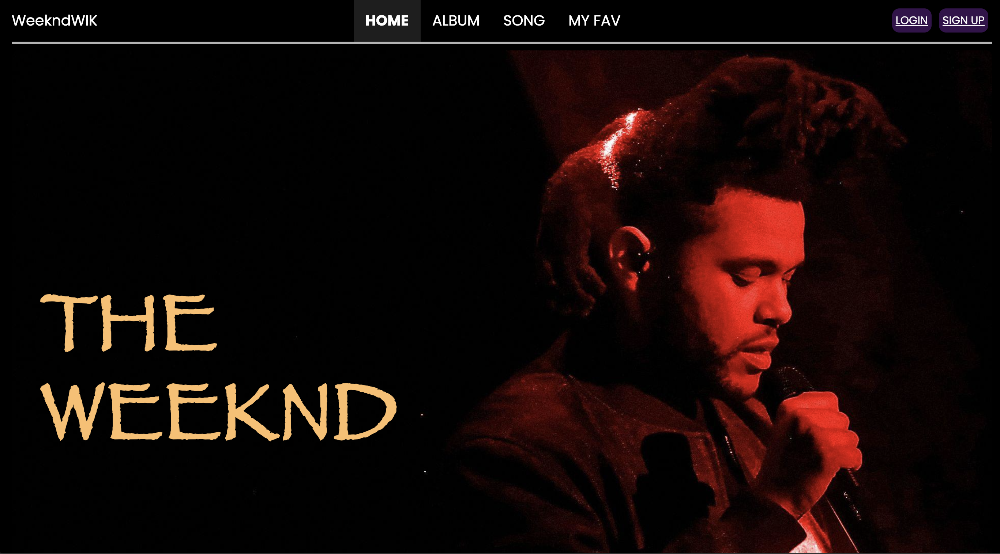
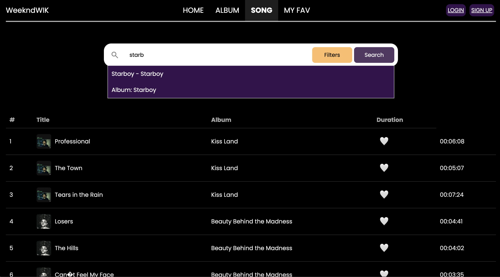
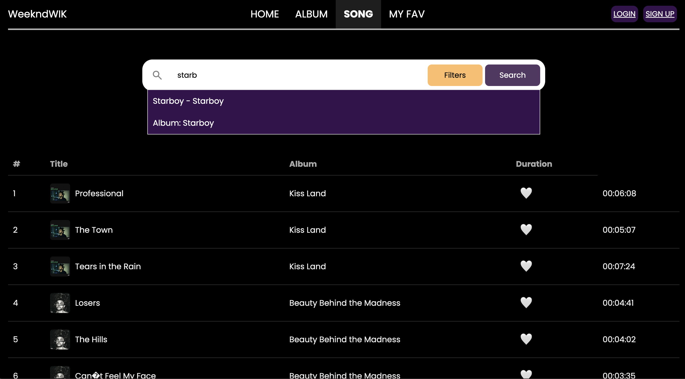
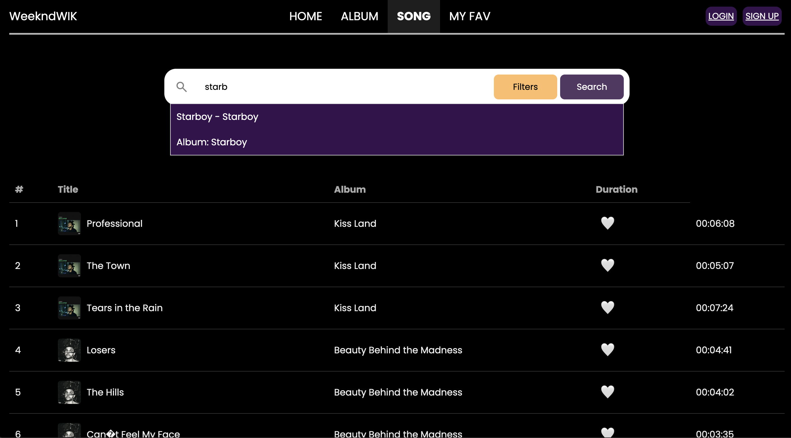

📌 WeekndWIK - Web App (HTML, CSS, Bootstrap) | Scrum Master
Tech Stack:
HTML, CSS, Bootstrap
Overview:
WeekndWIK is a fan-based web application that allows users to explore and review The Weeknd’s music discography. The platform features a responsive UI with interactive elements for enhanced user engagement.
Key Features:
- Album Collection & Detail Pages – Users can browse The Weeknd’s music collection.
- Responsive Design (Bootstrap) – Fully optimized for mobile and desktop viewing.
- Dynamic Filtering & Navigation – Allows users to search and filter albums efficiently.
- Interactive UI Components – Includes hover effects and dynamic elements.
Responsibilities:
- Led sprint planning and managed Agile workflows.
- Developed filtering and search functionalities for albums and songs.
- Designed navigation bar and account settings page.
- Developed User Review, Display Albums&Songs, and Random Track functionalities
- Managed login and register backend using php
- Setup Database and Hosting
Challenges:
- Team delays due to inefficient scheduling.
- Initial lack of real-time search functionality.
- Inconsistent styling across different pages.
Solutions:
- Revised team scheduling through structured Agile sprint planning.
- Implemented real-time JavaScript filtering for better search experience.
- Refined CSS and dark-mode styling for a seamless experience.


 


